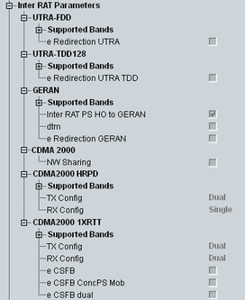

This section indicates the inter-RAT handover capabilities of the UE.

This node contains capability information for handover to UTRA FDD.
Lists the supported UTRA FDD operating bands. A handover to these bands is supported by the UE.
Remote command:Support of enhanced redirection to UTRA FDD, using system information provided upon redirection.
Remote command:This node contains capability information for handover to UTRA TDD with a chip rate of 1.28 Mcps.
Lists the supported UTRA TDD operating bands. A handover to these bands is supported by the UE.
Remote command:Support of enhanced redirection to UTRA TDD, using system information provided upon redirection.
Remote command:This node contains capability information for handover to GERAN.
Lists the supported GERAN operating bands.
Remote command:Support of a handover to GERAN.
Remote command:Support of the dual transfer mode (DTM) in GERAN.
Remote command:Support of an enhanced redirection to GERAN, using system information provided upon redirection.
Remote command:Support of network sharing for CDMA2000.
Remote command:This node contains capability information for handover to CDMA2000 HRPD.
Lists the supported HRPD band classes.
Remote command:Support of single/dual transmitter. Dual transmitter allows the UE to transmit simultaneously on E-UTRAN and HRPD.
Remote command:Support of single/dual receiver. Dual receiver allows the UE to receive simultaneously on E-UTRAN and HRPD.
Remote command:This node contains capability information for handover to CDMA2000 1xRTT.
Lists the supported 1xRTT band classes.
Remote command:Support of single/dual transmitter. Dual transmitter allows the UE to transmit simultaneously on E-UTRAN and 1xRTT.
Remote command:Support of single/dual receiver. Dual receiver allows the UE to receive simultaneously on E-UTRAN and 1xRTT.
Remote command:Support of enhanced CS fallback to CDMA2000 1xRTT.
Remote command:Support of concurrent enhanced CS fallback to CDMA2000 1xRTT and handover/redirection to CDMA2000 HRPD.
Remote command:Support of enhanced CS fallback to CDMA2000 1xRTT for dual Rx/Tx configuration.
Remote command: